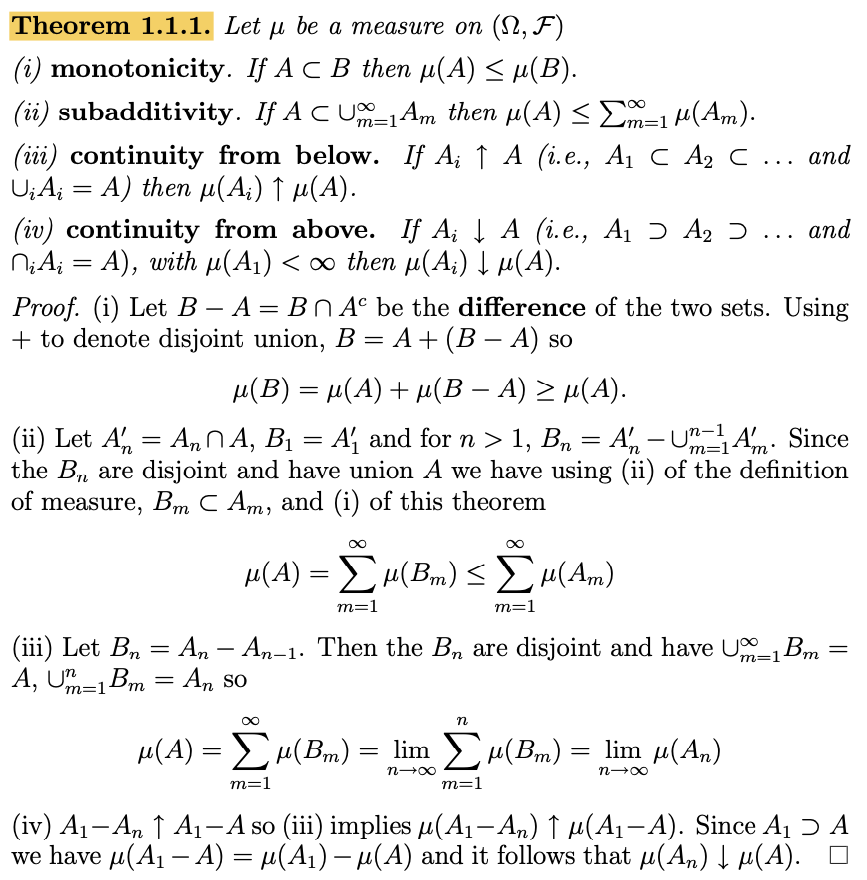
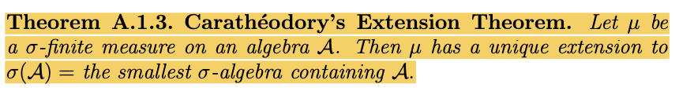

해당 강의노트는 전북대학교 최규빈교수님 AP2023 자료임
예비학습
헷갈리는 표현: \(\infty\)의 포함
- 자연수집합 \(\mathbb{N}\)은 \(\{\infty\}\)를 포함하지 않는다. 마찬가지로 실수집합 \(\mathbb{R}\) 역시 \(\{-\infty\}, \{\infty\}\)를 포함하지 않는다. 만약에 이를 포함하고 싶을 경우는 아래와 같이 표현한다.
- \(\mathbb{R} \cup \{-\infty\} \cup \{\infty\} = \bar{\mathbb{R}}\)
- \(\mathbb{N} \cup \{\infty\}\)
여기에서 \(\bar{\mathbb{R}}\)은 확장된 실수라고 부르는데 교재에따라 사용하기도 하고 사용하지 않기도 한다.
- 만약에 \(\mathbb{N}\)이 \(\{\infty\}\)를 포함한다면
- \(\forall n \in \mathbb{N}:~ 0<\frac{1}{n} \leq 1\)
와 같은 표현은 불가능할 것이다.
- 구간에 대한 표현들: 구간에 대한 몇가지 표현을 정리하면 아래와 같다.
- \((-\infty, b] = \{x: x\leq b, ~x,b \in \mathbb{R}\}\)
- \((-\infty, b) = \{x: x < b,~ x,b \in \mathbb{R}\}\)
- 구간에 대한 표현 응용: 아래와 같은 표현을 고려하자. (교재의 예제 1.1.8과 비슷한 표현)
- \({\cal A} = \{(a,b]: -\infty \leq a < b \leq \infty\}\)
\({\cal A}\)의 원소의 형태는
- \(\{x: a<x\leq b,~ a,x,b \in \mathbb{R}\}\)
- \(\{x: a<x,~ a,x \in \mathbb{R}\}\) 이거는 \((a,\infty]\) 이고 사실상 \((a,\infty)\)
- \(\{x: x\leq b,~ x,b \in \mathbb{R}\}\)
- \(\{x: x \in \mathbb{R}\}\)
이다.
약간 무식하게 생각하면 \([-\infty, b) = (-\infty,b)\) 로 해석하면 된다. 즉 \(\{-\infty\} \notin [-\infty,b)\) 이라는 의미! 보는것 처럼 \([-\infty, b)\)와 같은 표현은 엄청난 혼란을 불러오는 표현이므로 사용을 자제한다.
메져의 종류와 성질
- 메져의 종류와 성질 요약
| 분류 | \(m(\emptyset)=0\) | \(\sigma\)-add | \(A_i\uparrow \Omega\), \(m(A_i)<\infty **\) | \(m(\Omega)<\infty *\) | \(m(\Omega)=1\) | \(.\) | monotone | \(\sigma\)-subadd | conti-below | conti-above |
|---|---|---|---|---|---|---|---|---|---|---|
| msr | \(O\) | \(O\) | \(X\) | \(X\) | \(X\) | \(.\) | \(O\) | \(O\) | \(O\) | \(\Delta, m(A_1)<\infty\) |
| \(\sigma\)-finite-msr | \(O\) | \(O\) | \(O\) | \(X\) | \(X\) | \(.\) | \(O\) | \(O\) | \(O\) | \(\Delta, m(A_1)<\infty\) |
| finite-msr | \(O\) | \(O\) | \(O\) | \(O\) | \(X\) | \(.\) | \(O\) | \(O\) | \(O\) | \(O\) |
| prob-msr | \(O\) | \(O\) | \(O\) | \(O\) | \(O\) | \(.\) | \(O\) | \(O\) | \(O\) | \(O\) |
- (*)조건이 (**) 조건보다 세므로 *조건이 성립하면 **조건이 성립해야한다.
- 용어들
- \(\sigma\)-additive: \(m(\uplus_{i=1}^{\infty} B_i) = \sum_{i=1}^{\infty} m(B_i)\)
- monotone: \(A\subset B \Rightarrow m(A) \subset m(B)\)
- \(\sigma\)-subadditive: \(m(\cup_{i=1}^{\infty} A_i) \leq \sum_{i=1}^{\infty} m(A_i)\)
- continuous from below: \(A_i \uparrow A\) \(\Rightarrow\) \(m(\lim_{n\to\infty}A_i)=\lim_{n\to\infty}m(A_i)\) 측도의 연속성
- \(A_i \uparrow A\)가 의미하는것은 \(A_1 \subset A_2 \subset A_3 \dots \in \cal F\)이고 \(\cup_{i=1}^\infty A_i=A\)
- continuous from above: (1) \(A_i \downarrow A\) and (2) \(m(A_1)<\infty\) \(\Rightarrow\) \(m(\lim_{n\to\infty}A_i)=\lim_{n\to\infty}m(A_i)\)
- \(A_i \downarrow A\)가 의미하는것은 \(A_1 \supset A_2 \supset A_3 \dots \in \cal F\)이고 \(\cap_{i=1}^\infty A_i=A\)
\(m\) is msr on \((\Omega, \cal F)\), \(m: \cal F \to [0,\infty]\) is set funcion with
- \(m(\emptyset)=0\)
- \(B_1, B_2, \dots \in {\cal F}, m(\cup_{i=1}^\infty B_i) = \sum_{i=1}^\infty m(B_i)\)
- 2의 성질을 \(\sigma\)-additivity라고 부른다.
예시: m이 르벡측도이고 \(\Omega:[0,1]\)이라고 정의해보자.
\(m({0})=m(\cap_{i=1}^\infty (-\frac{1}{n},\frac{1}{n}))=m(\lim_{n\to\infty}(-\frac{1}{n},\frac{1}{n}))=\lim_{n\to\infty}m((-\frac{1}{n},\frac{1}{n}))=\lim_{n\to\infty} \frac{2}{n}=0\)
- 한점의 길이는 0
예시: \(\Omega=\mathbb{N}, {\cal F}=2^{\mathbb{N}}\), m:counting msr on \((\Omega, {\cal F})\)
\(A_n = \mathbb{N} - \{1,2,\dots,n\}\)
\(A_1 = \mathbb{N} - \{1\}\)
\(A_2 = \mathbb{N} - \{1,2\}\)
\(\dots\)
\(A_1 \supset A_2 \supset \dots,\cap_{i=1}^\infty A_i=\lim_{n\to\infty}A_i = \emptyset\)
\(m(\lim_{n\to\infty}A_i)=0\)
측도의 연속성을 적용시킬수 있다면
밖으로 뺴가지구 \(\lim_{n\to\infty}m(A_i)=0\)로 쓸 수 있고 \(\forall n \in \mathbb{N}, m(A_n)=\infty\)이므로 \(\lim_{n\to\infty}m(A_i)=0=\infty\)가 된다.
즉,
\(m(\lim_{n\to\infty}A_i) \neq \lim_{n\to\infty}m(A_i)\)이 되어 이 예제에서는 연속성을 만족시키지 않는다.
\(m(A_1)=\infty\) 이므로
- 교재의 언급 (p2. Thm 1.1.1)

- \(\sigma\)-finite msr 에 대한 동치조건: \(m\)이 \((\Omega, {\cal F})\)에서의 msr이라면, 아래는 동치이다. (ref: https://en.wikipedia.org/wiki/%CE%A3-finite_measure)
언어버전
- The set \(\Omega\) can be covered with at most countably many measurable sets with finite measure.
- The set \(\Omega\) can be covered with at most countably many measurable disjoint sets with finite measure.
- The set \(\Omega\) can be covered with monotone sequence of measurable sets with finite measure.
수식버전
- There are sets \(A_1,A_2,\dots \in {\cal F}\) with \(m(A_i)<\infty\) such that \(\cup_{i=1}^{\infty}A_i=\Omega\)
- There are sets \(B_1,B_2,\dots \in {\cal F}\) with \(m(B_i)<\infty\) and \(B_1,B_2\dots\) are disjoints such that \(\uplus_{i=1}^{\infty}B_i=\Omega\)
- There are sets \(C_1,C_2,\dots \in {\cal F}\) with \(m(C_i)<\infty\) and $C_1 C_2 $ such that \(\cup_{i=1}^{\infty}C_i=\Omega\)
파이시스템에서의 확장이론 (메져버전)
복습 & Motivating EX
- 귀찮아서 만든 이론2: 운이 좋다면, \({\cal A}\) 에서 확률의 공리를 만족하는 적당한 함수 \(\tilde{P}:{\cal A} \to [0,1]\)를 \((\Omega, \sigma({\cal A}))\) 에서의 확률측도 \(P\)로 업그레이드 할 수 있으며 업그레이드 결과는 유일하다.
- 이론: \((\Omega, \sigma({\cal A}), P)\)를 확률공간이라고 하자. 여기에서 \({\cal A}\)는 파이시스템이라고 가정하자. 그렇다면 확률측도 \(P:\sigma({\cal A}) \to [0,1]\)의 값은 \(P: {\cal A} \to [0,1]\)의 값에 의하여 유일하게 결정된다.
- 이 이론은 확률측도일 경우만 성립하고 측도일 경우는 실패(유일하게 결정되지 않음)했었다.
(예제1) – 통계학과라서 행복했던 예제
\(\Omega=\{a,b\}\) 이라고 하고 \({\cal A} = \{\{a\}\}\) 라고 하자. 가측공간 \((\Omega,\sigma({\cal A}))\)에서 정의가능한 모든 확률측도 \(P\)는 \({\cal A}\)에서의 값으로 유일하게 결정됨을 확인하였다. 하지만 가측공간 \((\Omega,\sigma({\cal A}))\)에서 정의가능한 측도 \(m\)은 \({\cal A}\)에서의 값으로 유일하게 결정되지 않는다.
| \(m_1\) | \(m_2\) | |
|---|---|---|
| \(\{a\}\) | \(\frac{1}{2}\) | \(\frac{1}{2}\) |
| \(-\) | \(-\) | \(-\) |
| \(\emptyset\) | \(0\) | \(0\) |
| \(\{b\}\) | \(\frac{1}{2}\) | \(1\) |
| \(\Omega\) | \(1\) | \(\frac{3}{2}\) |
\({\cal A}\)는 \(\pi\)-system
- 직관: 그냥 \({\cal A}\)에 \(\Omega\)가 있었다면 되는거 아닌가? 예를들어 아래와 같이 설정한다면?
| \(m_1\) | \(m_2\) | |
|---|---|---|
| \(\{a\}\) | \(\frac{1}{2}\) | \(\frac{1}{2}\) |
| \(\Omega\) | \(\frac{3}{2}\) | \(\frac{3}{2}\) |
| \(-\) | \(-\) | \(-\) |
| \(\emptyset\) | \(0\) | \(0\) |
| \(\{b\}\) | \(1\) | \(1\) |
\(m_1(\{b\})=m_2(\{b\})=1\) 일 수밖에 없지 않을까?
- 혹시 아래와 같이 이론을 수정하면 되지 않을까?
\((\Omega, \sigma({\cal A}))\)을 잴 수 있는 공간이라고 하고, \(m\)을 이 공간에서의 메져라고 하자. 만약에 \({\cal A}\)가 “전체집합을 포함하는 파이시스템” 이라면 메져 \(m:\sigma({\cal A}) \to [0,1]\)의 값은 \(m: {\cal A} \to [0,1]\)의 값에 의하여 유일하게 결정된다. (거의 맞는데 한 조건이 빠져서 틀렸음)
(예제2)
\(\Omega=\{a,b,c\}\) 이라고 하고 \({\cal A} = \{\{a\},\Omega\}\) 라고 하자. 여기에서 \({\cal A}\)는 “\(\Omega\)가 포함된 파이시스템”이다. 가측공간 \((\Omega,\sigma({\cal A}))\)에서 정의가능한측도 \(m\)은 \({\cal A}\)에서의 값으로 유일하게 결정될까?
(풀이) 아래의 반례가 존재함.
| \(m_1\) | \(m_2\) | |
|---|---|---|
| \(\{a\}\) | \(\frac{1}{2}\) | \(\frac{1}{2}\) |
| \(\Omega\) | \(\infty\) | \(\infty\) |
| \(-\) | \(-\) | \(-\) |
| \(\emptyset\) | \(0\) | \(0\) |
| \(\{b\}\) | \(1\) | \(\infty\) |
| \(\{c\}\) | \(\infty\) | \(5\) |
| \(\{a,b\}\) | \(\frac{3}{2}\) | \(\infty\) |
| \(\{a,c\}\) | \(\infty\) | \(\frac{11}{2}\) |
| \(\{b,c\}\) | \(\infty\) | \(\infty\) |
- 이론: \((\Omega, \sigma({\cal A}))\)을 잴 수 있는 공간이라고 하고, \(m\)을 이 공간에서의 유한측도라고 하자. 그리고 \({\cal A}\)는 전제집합을 포함하는 파이시스템이라고 하자. 그렇다면 메져 \(m:\sigma({\cal A}) \to [0,M]\)의 값은 \(m: {\cal A} \to [0,M]\)의 값에 의하여 유일하게 결정된다. (단, \(M=m(\Omega)<\infty\))
좀 더 약한 조건이 있었으면 좋겠따.
(예제3) – \({\cal A}\)가 \(\Omega\)를 포함하지 않는데, 메져가 유일하게 결정될 것 같은 예제
\(\Omega = \mathbb{Z}\) 이라고 하자. \(\Omega\)의 부분집합들로 이루어진 집합열 \(A_1,A_2,\dots\) 를 아래와 같이 정의하자.
\(A_{1} = [-\frac{1}{2}, \frac{2}{2}] \cap \mathbb{Z} = \{0, 1\}\)
\(A_{2} = [-\frac{2}{2}, \frac{3}{2}] \cap \mathbb{Z} = \{-1, 0, 1\}\)
\(A_{3} = [-\frac{3}{2}, \frac{4}{2}] \cap \mathbb{Z} = \{-1, 0, 1, 2\}\)
\(A_{4} = [-\frac{4}{2}, \frac{5}{2}] \cap \mathbb{Z} = \{-2, -1, 0, 1, 2\}\)
\(A_{5} = [-\frac{5}{2}, \frac{6}{2}] \cap \mathbb{Z} = \{-2, -1, 0, 1, 2, 3\}\)
\(\dots\)
\(A\)는 \(\pi\)-system. 그런데 \(\Omega\)는 포함하지 않는다. 하지만, \(U_{i=1}^\infty A_i= \mathbb{Z}\) 즉, \(A_i \uparrow \mathbb{Z}\)라고 볼 수 있다. 이 예제에서
관심있는 집합들의 모임은 \({\cal A}=\{A_n:n \in \mathbb{N}\}\)로 정의하자. 가측공간 \((\Omega,\sigma({\cal A}))\)에서 정의가능한 측도 \(m\)은 \({\cal A}\)의 값으로 유일하게 결정될까?
(관찰)
풀이에 앞서서 아래의 사실을 관찰해보자.
- \({\cal A}\)는 파이시스템이다.
- 집합열 \(A_n\)의 극한은 \(\Omega\)이다. 집합열 \(A_n\)은 증가하는 수열이므로 이 경우 \(A_n \uparrow \Omega\)라고 표현할 수 있다.
- 모든 \(A_n\)이 \({\cal A}\)의 멤버라고 했으나 \(A_n\)의 극한 \(\Omega\)가 \({\cal A}\)의 멤버라고 한 적은 없다. 따라서 \({\cal A}\)는 전체집합을 포함하지는 않는 파이시스템이다.
(풀이)
가측공간 \((\Omega,\sigma({\cal A}))\)에서 정의가능한 측도 \(m\)은 \({\cal A}\)의 값으로 유일하게 결정하는 것이 가능할 것 같다. (실제로 가능해) 왜냐하면
- \(m(A_1),m(A_2), m(A_3) \dots\) 의 값이 결정 \(\Rightarrow\) \(m(\{0,1\})\), \(m(\{-1\})\), \(m(\{2\})\), \(\dots\) 의 값이 결정
이므로, 0과 1을 제외한 \(\mathbb{Z}\)의 모든 원소의 길이가 유일하게 결정되니까.
생각의 시간
아래의 이론을 다시 관찰하자.
이론: \((\Omega, \sigma({\cal A}))\)을 잴 수 있는 공간이라고 하고, \(m\)을 이 공간에서의 유한측도라고 하자. 그리고 \({\cal A}\)는 전체집합을 포함하는 파이시스템이라고 하자. 그렇다면 메져 \(m:\sigma({\cal A}) \to [0,M]\)의 값은 \(m: {\cal A} \to [0,M]\)의 값에 의하여 유일하게 결정된다. (단, \(M=m(\Omega)<\infty\))
(의문1)
\({\cal A}\)가 꼭 전체집합을 포함할 필요는 없어보인다. 즉 조건 \(\Omega \in {\cal A}\)는 굳이 필요 없어보인다. 이 조건은 더 약한 아래의 조건으로 대치가능하다.
\(\exists A_1,A_2,\dots \in {\cal A}\) such that \(A_i \uparrow \Omega\) (*)
위의 내용은 \(A_1 \subset A_2 \subset \dots \cup_{i=1}^{\infty} A_i = \Omega\)
만약에 \(\Omega \in {\cal A}\)인 경우는 \(A_1=\Omega\)로 잡으면 위 조건이 그냥 성립한다. 따라서 위의 조건은 \(\Omega \in {\cal A}\) 보다 약한 조건이다. 그리고 심지어 위의 조건은 다시 아래의 더 약한 조건으로 바꿀 수 있다.
- \(\exists A_1,A_2,\dots \in {\cal A}\) such that \(\cup_{i=1}^{\infty} A_i = \Omega\) (**)
(*)과 (**)는 동치이다.
- \(\exists B_1, B_2, \dots \in {\cal A}\) such that \(\uplus_{i=1}^\infty B_i = \Omega\) 이것도 위의 (*)와 (**)와 동치
(의문2)
심지어 \(m(\Omega) = \infty\) 이어도 상관없다.1 이 예제에서
- \(m(\{0,1\})=2\)
- \(m(\{-1\})=1\)
- \(m(\{2\})=1\)
- \(\dots\)
이라고 하면 \(m\)은 잴 수 있는 공간 \((\Omega,\sigma({\cal A}))\)에서의 카운팅메져가 되고, 그 \(m\)은 \(A \in {\cal A}\)에서의 값으로 유일하게 결정된다. 문제가 생길만한 것은
- \(m(\{0,1\})=2\)
- \(m(\{-1\})=1\)
- \(m(\{2\})=\infty\) <– 이러면 곤란
- \(\dots\)
와 같은 경우이므로, 이 경우만 제약하면 된다. 즉 \(m\)이 시그마유한측도라고 제한하면 될 것 같다.
state
- Thm:
\((\Omega, \sigma({\cal A}),m)\)을 시그마유한측도공간(\(\sigma\)-finite measure space)이라고 하자. \({\cal A}\)은 아래를 만족하는 파이시스템이라고 하자.
- \(\exists A_1,A_2,\dots \in {\cal A}\) such that \(\cup_{i=1}^{\infty} A_i = \Omega\)
- \(\forall i \in \mathbb{N}:~ m(A_i) <\infty\)
그렇다면 메져 \(m:\sigma({\cal A}) \to [0,\infty]\)의 값은 \(m: {\cal A} \to [0,\infty]\)의 값에 의하여 유일하게 결정된다.
조건 1,2는 결국 \(m\)을 시그마유한측도로 만들어주는 그 집합열이 \(\sigma({\cal A})-{\cal A}\)가 아니라 \({\cal A}\)에 있어야 한다는 의미임.
증명
- 노트: supp_7wk.pdf
- 교재의 증명: 교재의 증명은 좀 더 강한 조건에서 했음. (“\(A_1,A_2,\dots, {\cal A}\) with \(m(A_i)<\infty\) such that \(m(A_i)<\infty\)” 를 가정함.)

카라데오도리 확장정리
- 귀찮아서 만든 이론2: 운이 좋다면, \({\cal A}\) 에서 확률비슷한 적당한 함수 \(\tilde{P}:{\cal A} \to [0,1]\)를 잘 정의한다면, 이 함수 \(\tilde{P}\)는 \((\Omega, \sigma({\cal A}))\)에서의 확률측도 \(P\)로 업그레이드 할 수 있으며 업그레이드 결과는 유일하다.
state
- Thm: \({\cal A}\)가 \(\Omega\)에 대한 semiring이라고 하자. 함수 \(\tilde{m}: {\cal A} \to [0,\infty]\)가
- \(\tilde{m}(\emptyset)=0\)
- \(\tilde{m}(\uplus_{i=1}^{n} B_i)=\sum_{i=1}^{n}\tilde{m}(B_i)\) additivity 조건
- \(\tilde{m}(\cup_{i=1}^{\infty} A_i) \leq \sum_{i=1}^{\infty}\tilde{m}(A_i)\) \(\sigma\)-subadd 조건
- \(\sigma\)-additivity조건은 위의 2,3번으로 쪼개졌다고 생각하자.
- \(\exists A_1,A_2 \dots \in {\cal A}\) with \(\tilde{m}(A_i)<\infty\) such that \(\cup_{i=1}^{\infty}A_i = \Omega\)
1~3번은\(\tilde{m}\)가 \({\cal A}\)에서 msr 비슷, 4번까지하면 \(\tilde{m}\)가 \({\cal A}\)에서 \(\sigma\)-finte msr 비슷
add \(\rightarrow\) subadd, \(\sigma\)-add \(\rightarrow\) \(\sigma\)-subadd
를 만족한다면 \(\tilde{m}\)은 \((\Omega,\sigma({\cal A})\)에서의 측도 \(m\)으로 업그레이드 가능하며, 이 업그레이드 결과는 유일하다.
- semiring이라는 것은 파이시스템이라는 것보다 강한 조건
이 결과를 ver1로 생각하자.
- 교재의 state (ver2, ver3)

ver1과의 비교: \({\cal A}\)가 알지브라라는 것은 세미링보다 훨씬 강한 조건이다. 또한 measure on an algebra \({\cal A}\)란 것은 1,2,3 조건을 다 합친것 보다 강한 조건이다. \(\sigma\)-finite이라는 조건은 \({\cal A}\)의 차이를 제외하면 동일하다.

ver1과의 비교: \({\cal A}\)가 세미알지브라라는 조건은 세미링보다 강한 조건이다. (i), (ii)의 \({\cal A}\)의 차이만 있을 뿐 거의 동일하다. 4의 조건도 \({\cal A}\)의 차이를 제외하고는 동일하다.
예제: 3월28일 (4wk) 예제들
(예제1) – motivating EX
- \(\Omega=\{1,2,3,4\}\)이라고 하자. 내가 관심있는 집합의 모음은 아래와 같다.
\[{\cal A} = \{\emptyset, \{1\},\{2\},\{3,4\},\Omega\}\]
- 소망: 그래도 그냥 \({\cal A}\)에서만 확률 비슷한 함수 \(\tilde{P}\)를 잘 정의하면 \((\Omega,\sigma({\cal A}))\)에서의 확률측도로 업그레이드 가능하고 업그레이드 결과가 유일할까?
- \(\tilde{P}(\emptyset) = 0\)
- \(\tilde{P}(\{1\}) = 1/4\)
- \(\tilde{P}(\{2\}) = 1/2\)
- \(\tilde{P}(\{3,4\}) = 1/4\)
- \(\tilde{P}(\Omega) = 1\)
- 조건체크
- \({\cal A}\)는 세미알지브라(그러므로 세미링)이다.
- \({\cal A}\)는 전체집합을 포함하고 있으며 \({\tilde P}(\Omega)=1\)이다. \(\Rightarrow\) 조건 (4)가 만족.
- \({\tilde P}\)는 (1) \(\tilde{P}(\emptyset)=0\) 이고 (2) add 를 만족하며 (3) \(\sigma\)-subadd 를 만족한다.
참고: 이 예제의 경우 \(|\Omega|<\infty\) 이므로 \(\sigma\)-subadd 는 subadd 와 같은 성질이다. 그리고 add 는 subadd를 imply 하므로 사실상 (2) 만 체크하면 끝난다.2
(예제2) – motivating EX (2)
- \(\Omega=\{1,2,3,4\}\)이라고 하고 \({\cal A} = \{\emptyset, \{1\},\{2\}, \{3,4\}, \Omega\}\) 라고 하자. 그리고 아래와 같은 \(\sigma({\cal A})\)를 다시 상상하자.
\[\sigma({\cal A}) = \big\{\emptyset, \{1\}, \{2\}, \{1,2\}, \{3,4\}, \{1,3,4\}, \{2,3,4\}, \Omega \big\}\]
- 위의 시그마필드에서 확률을 예제1과 다른 방식으로 정의할 수 도 있다. 예를들면 아래와 같은 방식으로 정의가능하다.
| \(P_1\) | \(\tilde{P}_1\) | |
|---|---|---|
| \(\emptyset\) | \(0\) | \(0\) |
| \(\{1\}\) | \(\frac{1}{3}\) | \(\frac{1}{3}\) |
| \(\{2\}\) | \(\frac{1}{3}\) | \(\frac{1}{3}\) |
| \(\{3,4\}\) | \(\frac{1}{3}\) | \(\frac{1}{3}\) |
| \(\Omega\) | \(1\) | \(1\) |
| \(-\) | \(-\) | \(-\) |
| \(\{1,2\}\) | \(\frac{2}{3}\) | None |
| \(\{1,3,4\}\) | \(\frac{2}{3}\) | None |
| \(\{2,3,4\}\) | \(\frac{2}{3}\) | None |
또한 아래와 같은 방식도 가능하다.
| \(P_2\) | \(\tilde{P}_2\) | |
|---|---|---|
| \(\emptyset\) | \(0\) | \(0\) |
| \(\{1\}\) | \(0\) | \(0\) |
| \(\{2\}\) | \(0\) | \(0\) |
| \(\{3,4\}\) | \(1\) | \(1\) |
| \(\Omega\) | \(1\) | \(1\) |
| \(-\) | \(-\) | \(-\) |
| \(\{1,2\}\) | \(0\) | None |
| \(\{1,3,4\}\) | \(1\) | None |
| \(\{2,3,4\}\) | \(1\) | None |
어떠한 방식으로 정의하든 \({\cal A}\)에서 확률 비슷한 것 \(\tilde{P}_1,\tilde{P}_2\)를 잘 정의하기만 \(\sigma({\cal A})\)에서의 확률 \(P\)로 적절하게 확장할 수 있다. 심지어 이런 확장은 유일한 듯 하다.
- 당연함. 예제1과 동일하게 \(\tilde{P_1}\)과 \(\tilde{P_2}\)가 add 성질만 만족한다는 사실을 체크하면 끝난다.
(예제3) – 운이 안 좋은 경우
- \(\Omega=\{1,2,3\}\) 이라고 하고 \({\cal A} = \{\emptyset, \{1,2\},\{2,3\}, \Omega\}\) 라고 하자.
- 아래와 같은 확률 비슷한 함수 \(\tilde{P}:{\cal A} \to [0,1]\)를 정의하자.
- \(\tilde{P}(\emptyset) = 0\)
- \(\tilde{P}(\{1,2\}) = 0\)
- \(\tilde{P}(\{2,3\}) = 0\)
- \(\tilde{P}(\Omega) = 1\)
- 체크: 일단 \({\cal A}\)는 세미링이 아니다. 따라서 확장 불가능. 세미링이 맞다고 하여도 subadd가 성립하지 않는다.
(예제4) – 운이 안 좋은 경우
- \(\Omega=\{1,2,3,4\}\) 이라고 하고 \({\cal A} = \{\emptyset, \{1,2\},\{2,3\}, \Omega\}\) 라고 하자.
- 아래와 같은 확률 비슷한 함수 \(\tilde{P}:{\cal A} \to [0,1]\)를 정의하자.
- \(\tilde{P}(\emptyset) = 0\)
- \(\tilde{P}(\{1,2\}) = 1/2\)
- \(\tilde{P}(\{2,3\}) = 1/2\)
- \(\tilde{P}(\Omega) = 1\)
- 체크: \(\tilde{P}\)는 괜찮게 정의되었다. (1)-(4)가 모두 성립한다. (위의 예제와는 다르게 subadd 역시 성립함!!) 하지만 \({\cal A}\)가 세미링이 아니어서 탈락.